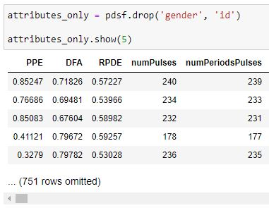

Building the Classifier
Cleaning & preparing data
First, only the clinically useful attributes should be selected from this dataset. Namely, gender and ID should be removed as they are irrelevant conflating factors that will mislead the learning process if left in.
Because data collected varied significantly in terms of its raw numerical values (with some being between 1 and -1, and others being in the tens of thousands), it would be ideal to standardize the values of every individual attribute so as to not attribute too much distancing weight on attributes that may be large in number but limited in implementation as an actual predictive measure . To standardize, for each column the standard deviation is found formulaically, and applied in the scaled form of each individual value minus the mean over the standard deviation.
A simple operation to replace labels

By calculating the Euclidean distance between any two given points, the result can be used as a component of k-NN classification. A simple function that changes row to array and calculates distance values for every attribute value will do for now. This dataset provides over 750 clinical attributes.
Interpreting attributes
The importance of leveraging the data to its full extent can be illustrated by a simple two-dimensional scatter comparison between two arbitrary attributes. While in some cases, like the one on the right, a pattern albeit is more apparent but still insufficient, in most cases restricting learning to very few attributes does not offer a clear associative relationship for classification.
Additionally,